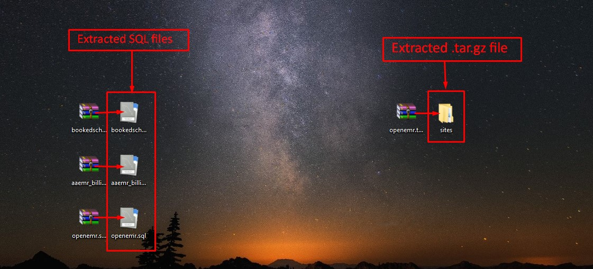

Dotmark Medical Solutions (DMS) Front Office Manual
"Easy, Quick and Efficient"
At DMS we strive to facilitate and streamline all your enterprise needs to achieve excellent care delivery and clinical
productivity.
Backup Data
Backup data will download all the stored files on the DMS to a .tar file as shown in the figure.
- Click on the .tar file and extract the content.
- Extracting content will bring four new .gz files which need to be extracted.
- Among these four files. Three of them will have .sql.gz and one of the will have tar.gz.
- Extract each, and view datas stored in it.
- Files with .sql.gz requires MySQL Workbench to view the data.
- The tar.gz file will have all the uploaded document of the patients.
Note: To download MySQL Workbench, Google "mysql workbench download" and follow the link to the download page. Read below the instruction on how to use MySQL Workbench to import the database on to your system. Also note that MySQL should be installed to store these databases.
Backup for one file will be shown below. Please follow the same procedure to other .sql files
- Extract .sql.qz file on a folder of your choice. In the example below files are extracted on the desktop.
- The extracted .tar.gz file will give Sites folder.
- Simply open the files and view the contents. You won't need any additional set up to view files in the folder.

The .sql files requires additional set up to view and restore the information's it contains.
Assuming MySQL and MySQL Workbench are installed in your system, follow the below steps to restore data.
Important: Please note that you have to configure MySQL Workbench to view the "root" tab. To view this please follow the instruction on how to install MySQL. There you will set a username and password. This username and password will be used by MySQL Workbench to login to your computer's MySQL database.
- Open MySQL Workbench and click on the tab where is says "root" and "localhost:3306" as shown in the image below.
- The user of my database is "root". Password won't be displayed here.
- Here, localhost:3306 mean that the MySQL server is running on "localhost" and on port "3306".
- Clicking on "root" tab will navigate to the following screen.
- Follow 1, 2, 3 and 4 steps as shown in the figure below.
- 1: Click on Data Import/Restore
- 2: Check on Import from Self-Contained File and click ... to give path to the .sql file.
- 3: Click New... and give a name to the file that you are storing. Give the name of the file same as the .sql file but without the .sql mentioned on it ("aaemr_billing" in my case).
- 4: Press Start Import to begin the process. Please enter the password if prompted.
Follow the same procedure to the remaining two .sql file to restore data.